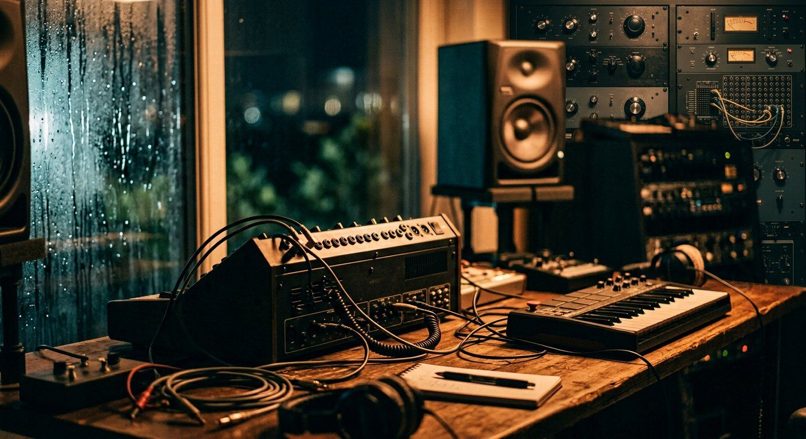

Best Budget Studio Monitor Speakers for Home Producers (2026 Guide)
Monitors for a small, untreated room: why the room matters more than the speaker, what size fits a desk, and the budget pairs worth starting with.

Disclosure: This page uses affiliate links. We may earn a commission at no extra cost to you. Full disclosure →
In an untreated bedroom, a $300 pair of monitors and a $1,500 pair sound more similar than either manufacturer would like you to believe. The room is doing more damage than the speaker: a corner boom at 80 Hz, a null at your listening position, a desk reflection that makes everything sound hollow. So the useful advice is not to buy the best monitor, but to buy a monitor that suits your room and then treat the room a little. These are the pairs worth starting with, and what actually changes as you spend more.
The Entry-Level King: PreSonus Eris Series
For those starting their journey or working in extremely limited spaces, the PreSonus Eris series (specifically the E3.5 and E4.5) remains the gold standard for ultra-budget monitoring. In 2026, these speakers are prized for their compact footprint and surprising clarity in the mid-range. While they lack the deep sub-bass extension of larger monitors, they provide a cohesive image that allows beginners to make informed EQ decisions. The built-in acoustic tuning controls allow you to adjust the high and low frequencies to compensate for poor room acoustics, which is a lifesaver in untreated bedrooms. They are ideal for "sketching" ideas and basic production before moving a track to a professional mixing environment.
Live price and stock at the retailer. Prices move week to week — we date every figure in this guide.
The Low-End Powerhouse: KRK Rokit 5
If your production style leans toward EDM, Hip-Hop, or Trap, the KRK Rokit 5 continues to be a dominant force in home studios. Known for their iconic yellow cones, the Rokit series provides a boosted low-end response that helps producers feel the punch of their kicks and basslines without needing an immediate subwoofer. The 2026 iterations feature refined DSP-driven room correction via a companion app, allowing you to calibrate the speakers to your specific room dimensions. While some purists argue they aren't as "flat" as others, their ability to inspire creativity during the production phase is unmatched in the sub-$400 category.
Live price and stock at the retailer. Prices move week to week — we date every figure in this guide.
The Accuracy Standard: Yamaha HS5
When the goal shifts from producing to mixing, the Yamaha HS5 is the go-to recommendation. These monitors are designed with a "flat" response, meaning they don't flatter your music; they expose its flaws. If a mix sounds good on the HS5s, it will likely sound good everywhere. The high-frequency precision is exceptional, making it easy to spot harsh sibilance or cluttered arrangements in the upper mids. Because they don't provide much low-end "warmth," they force the producer to be disciplined with their bass management. For the home producer who prioritizes translation and professional polish over "vibe," the HS5 is the most reliable investment.
Live price and stock at the retailer. Prices move week to week — we date every figure in this guide.
Choosing the Right Pair for Your Space
Selecting the right monitor depends entirely on your room and your goals. If you are in a small, untreated room, larger 8-inch monitors will cause "bass buildup," making your mixes sound muddy and inaccurate. In such cases, a smaller 5-inch monitor like the HS5 or Eris 4.5 is superior. Conversely, if you are primarily a beatmaker who relies on low-end energy, the KRK Rokits provide the necessary impact. Always consider the "near-field" setup—positioning your speakers to form an equilateral triangle with your head—to minimize the impact of room reflections. Pairing these budget monitors with basic acoustic foam or bass traps will do more for your sound than spending an extra $500 on higher-end speakers.
Budget Monitor Comparison Table
| Model | Approx. Price | Best For | Key Pro | Key Con |
|---|---|---|---|---|
| PreSonus Eris 3.5 | $110 - $150 | Absolute Beginners | Incredible value/size | Limited bass response |
| KRK Rokit 5 | $320 - $380 | EDM / Hip-Hop | Punchy low-end & DSP | Can be too "colored" |
| Yamaha HS5 | $350 - $420 | Mixing & Mastering | Extremely accurate mids | Lacks deep bass |
| Mackie CR4 | $130 - $170 | Content Creation | Clear, loud output | Not a true "flat" response |
Quick Verdict
- The Hobbyist: Go with the PreSonus Eris 3.5. It's the most affordable way to move beyond computer speakers.
- The Beatmaker: Choose the KRK Rokit 5. The low-end energy is essential for modern urban production.
- The Aspiring Engineer: Invest in the Yamaha HS5. Accuracy is the only way to ensure your mixes translate to professional systems.
Investing in the right monitors is the fastest way to improve the quality of your productions. While the equipment is vital, remember that your ears are your most important tool—use these monitors to train them. Ready to upgrade your listening experience? Check out the latest deals and current pricing via our affiliate links below to find the perfect pair for your setup.
Bottom line: For budget-conscious producers, the Yamaha HS5 delivers the most accurate flat response for mixing and mastering under $400/pair. The PreSonus Eris 3.5 offers unbeatable value for beginners at half the price. Choose based on your room size and production style.
Shop on Amazon
Compare studio monitor prices on Amazon — pair or single options, Prime shipping.
Before you buy: five quick checks
Monitors are only as good as the room they sit in. These are the checks that matter before you spend more on speakers.
Frequently Asked Questions
What's the minimum budget for good studio monitors?
Budget $150–$300 per pair for reliable near-field monitoring. The Yamaha HS5 ($399/pair) and KRK Rokit 5 G4 ($249/pair) are the entry points where flat frequency response is accurate enough for mixing decisions. Below $150, most monitors color the sound too heavily.
Active vs passive studio monitors — which should I choose?
Active monitors (built-in amplifier) are the right choice for 99% of home studios. They're matched to their drivers from the factory, require no separate amp, and connect directly to an audio interface. Passive monitors offer upgrade flexibility but require a power amp and crossover — unnecessary complexity for home use.
How far should studio monitors be from the wall?
Place monitors at least 30cm (12") from the rear wall to reduce bass buildup. Low frequencies bounce off walls and create standing waves that artificially boost bass in your mix. The classic equilateral triangle setup — monitors and ears forming equal sides of 1–1.5m — gives the most accurate stereo image.
5-inch vs 8-inch monitors — which is better for home studios?
5-inch monitors suit rooms under 15m². They produce accurate mids and highs but roll off below 60Hz — you'll need headphone checks for sub bass. 8-inch monitors extend to ~45Hz and work in medium rooms, but can over-emphasize low end in small untreated spaces. Most home producers do better with 5-inch monitors and treated corners.
Do I need acoustic treatment with studio monitors?
Yes — untreated rooms will make even expensive monitors sound inaccurate. Bass traps in corners fix the biggest problem (low-frequency buildup). Acoustic foam panels on reflection points (first side walls, ceiling above desk) improve high-frequency accuracy. Without treatment, your mix decisions are based on room artifacts, not the actual audio.